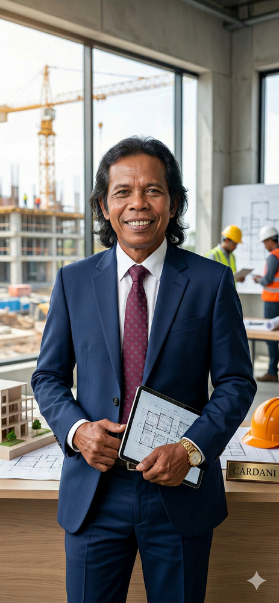
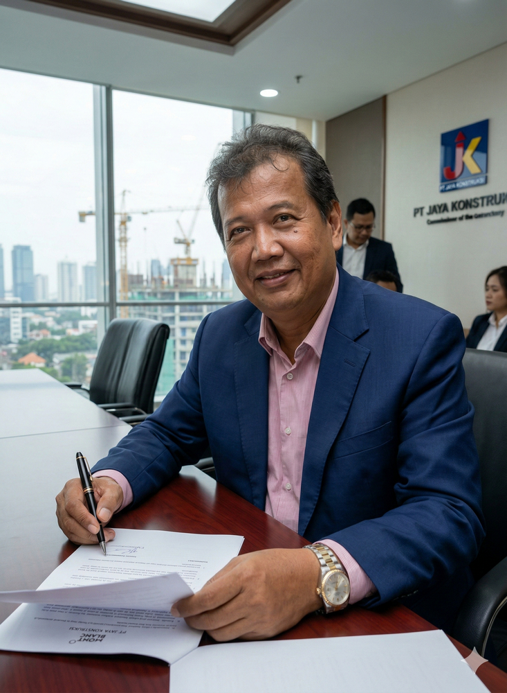
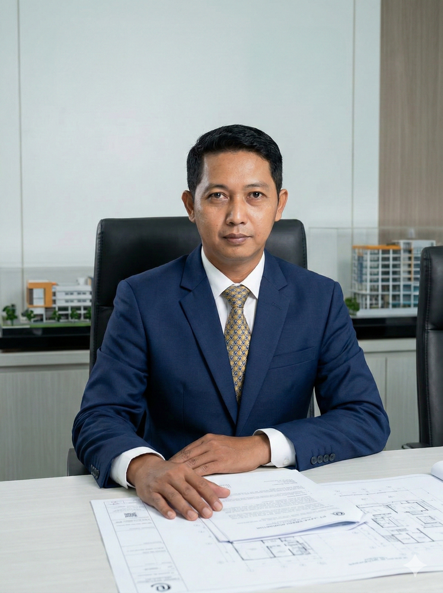
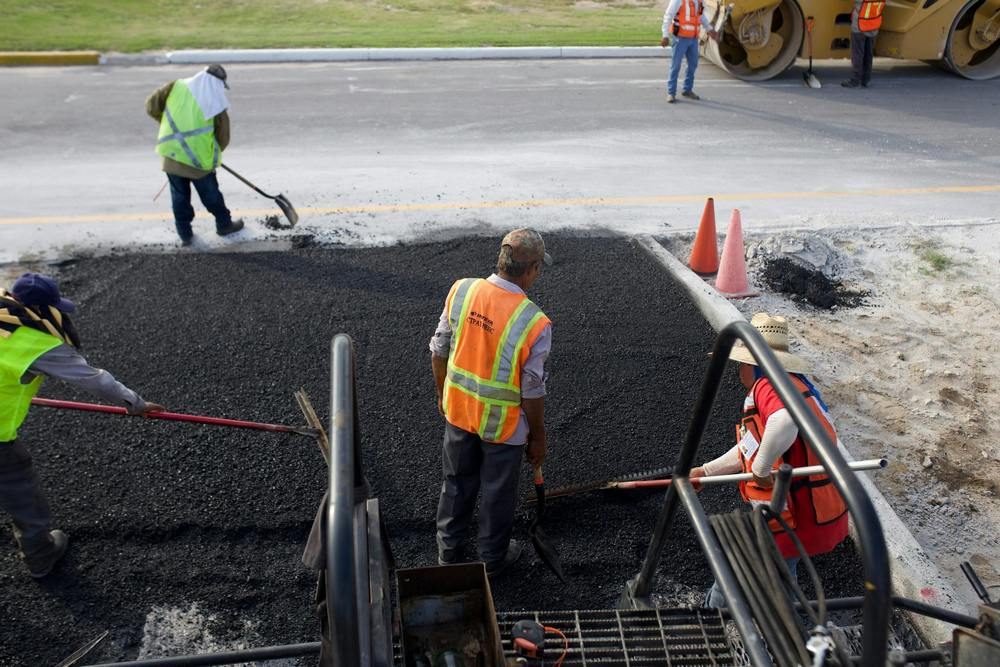
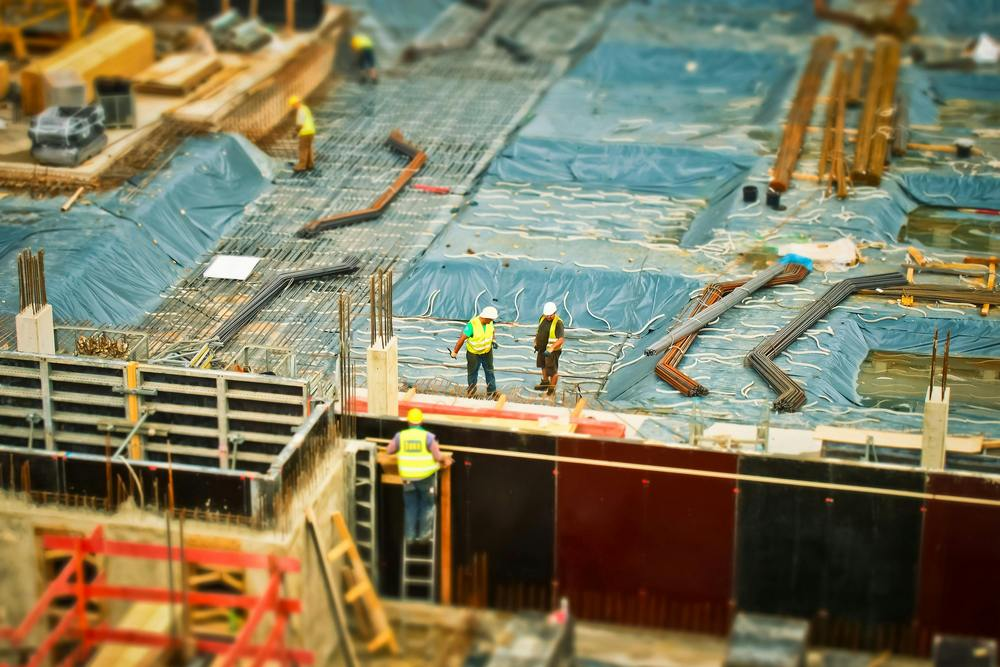

Direktur Utama PT Cardani Konstruksi Utama

Komisaris Utama
Mantan direktur dengan insting setajam elang. Pengawas anggaran paling ketat, pantang ada selisih di RAB proyek maupun dana operasional armada logistik yang luput dari pantauannya.
Sertifikasi Profesional:
Komisaris (Fokus K3)
Berwibawa dalam menjaga keselamatan lapangan. Sangat paham standar medis dan kesehatan kerja, memastikan tensi para kuli dan *engineer* tetap stabil walaupun pusing kejar *deadline*.
Sertifikasi Teknik:
Direktur Keuangan & Operasi
Pawang *cash flow* perusahaan. Memastikan tagihan proyek cair tepat waktu, laporan bersih dari temuan audit, dan paling jago menawar harga *supplier* sampai mereka menangis pasrah.
Sertifikasi Keuangan:

Direktur Logistik & Armada
Panglima jalanan yang mengurus segala pergerakan material. Sangat piawai mengatur ritase pengiriman via Evalia, memastikan armada truk terus narik, dan pantang pulang sebelum target cuan bersih Rp 10.000.000.000 - 15.000.000.000 per bulan tercapai!
Sertifikasi Logistik:


Hitungan valid material (Rasio 1:2:3) untuk pengecoran plat lantai/jalan.